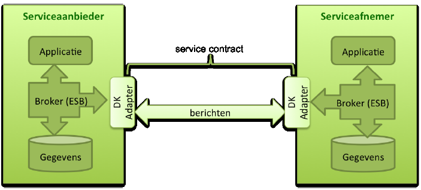

Dit document is bedoeld om een algemene toelichting te geven over Digikoppeling en het gebruik ervan.
1.2 Leeswijzer
In de volgende hoofdstukken wordt antwoord gegeven op de vragen:
Hoofdstuk 2
Wat is Digikoppeling? En waaruit bestaat de Digikoppeling standaard?
Hoofdstuk 3
Waarom Digikoppeling gebruiken?
Hoofdstuk 4
Wanneer Digikoppeling (verplicht) gebruiken?
Hoofdstuk 5
Hoe werkt Digikoppeling en wat zijn de kenmerken? De koppelvlakstandaarden worden op hoofdlijn besproken.
Hoofdstuk 6
Waaraan koppelen? Zoals op Basisregistraties en Voorzieningen.
Hoofdstuk 7
Wat zijn ontwikkelingen in het kader van Digikoppeling? Betreft een toelichting op de versies van Digikoppeling en toekomstige ontwikkelingen.
Hoofdstuk 8
Hoe aansluiten en wie biedt ondersteuning? Betreft aansluitprocedure en welke ondersteuning wordt geboden door Logius en leveranciers.
Hoofdstuk 9
Wie is de eigenaar en beheerder van de standaard?
Begrippen worden zoveel mogelijk in dit document uitgelegd. Maar een overzicht van begrippen en afkortingen staat in het document [Digikoppeling Architectuur]1.
1: Met “vx.x” wordt de laatst gepubliceerde versie op de Logius website bedoeld.
Documenten of bronnen die relevant zijn om te raadplegen voor “meer informatie” worden aan het einde van een paragraaf opgesomd.
1.3 Doelgroep van dit document
Afkorting
Rol
Taak
Doelgroep
[MT]
Management
Bevoegdheid om namens organisatie (strategische) besluiten te nemen.
Nee
[PL]
Projectleiding
Verzorgen van de aansturing van projecten.
Ja
[A&D]
Analyseren & ontwerpen (design)
Analyseren en ontwerpen van oplossings-richtingen. Het verbinden van Business aan de IT.
Ja
[OT&B]
Ontwikkelen, testen en beheer
Ontwikkelt, bouwt en configureert de techniek conform specificaties. Zorgen voor beheer na ingebruikname.
Ja
Tabel 1: Doelgroepen Digikoppeling documentatie.
2. Wat is Digikoppeling?
2.1 Inleiding
Zoals een brief in een envelop gaat voor verzending, zo gaat een elektronisch bericht in een digitale ‘envelop’. Digikoppeling is de standaard digitale ‘envelop’ voor het gestructureerd en gecontroleerd uitwisselen van berichten tussen (semi-)overheidsorganisaties. Met één Digikoppeling-implementatie kunt u berichten uitwisselen met alle overheden en aansluiten op vrijwel alle e-overheidbouwstenen. Denk hierbij aan bijvoorbeeld basisregistraties zoals LV-WOZ, het Omgevingsloket of Digimelding.
Door Digikoppeling kunnen (semi-)overheidsorganisaties eenvoudiger, veiliger, sneller en goedkoper elkaars gegevens gebruiken dan wanneer alle organisaties los van elkaar bilaterale afspraken zouden maken. Het belang en de omvang van gegevensuitwisselingen in de e-overheid neemt alleen maar toe. Digikoppeling is een onmisbare voorwaarde om die uitwisseling efficiënt uit te voeren.
Digikoppeling is één van de Stelselvoorzieningen. Wat de Stelselvoorzieningen zijn wordt in hoofdstuk 6 beschreven.
2.2 Doel van Digikoppeling
Organisaties willen diensten klantgericht, efficiënt, flexibel en rechtmatig aanbieden aan burgers en bedrijven. Daarvoor moeten zij gegevens en documenten op een generieke manier met elkaar kunnen uitwisselen.
Digikoppeling voorziet in een standaard om deze uitwisseling van gegevens en documenten te definiëren. Met deze logistieke standaardisatie bevordert Digikoppeling de interoperabiliteit tussen (semi-)overheidsorganisaties. Digikoppeling richt zich op de 'envelop' van het bericht, niet op de inhoud. Daardoor kan iedere organisatie die Digikoppeling gebruikt, de postverzending onafhankelijk van de inhoud inrichten.
Digikoppeling is primair bedoeld voor gegevensuitwisseling tussen systemen van overheidsorganisaties, in het bijzonder de basisregistraties en landelijke of intersectorale gegevensdiensten. Digikoppeling wordt echter breder ingezet in de (semi-)publieke sector. Digikoppeling is beschikbaar voor elke organisatie die veilig en betrouwbaar gegevens wil uitwisselen met andere organisaties in de publieke sector. Tevens is Digikoppeling beschikbaar voor gebruik in de private sector.
2.3 Scope van Digikoppeling
Om digitale berichten uit te wisselen moeten organisaties op drie niveaus afspraken maken:
Over de inhoud en betekenis van berichten (payload en eventuele bijlagen): de structuur, semantiek, waardebereiken enzovoort.
Over de logistiek (envelop): transportprotocollen (HTTP), messaging (SOAP), adressering, beveiliging (authenticatie en encryptie) en betrouwbaarheid.
Over het transport (netwerk): de protocollen van de TCP/IP stack (TCP voor Transport, IP voor Netwerk) en de infrastructuur, bijvoorbeeld Diginetwerk of Internet.
Digikoppeling richt zich op de logistieke laag van de berichtuitwisseling in de publieke sector. Daarbij conformeert Digikoppeling zich aan de Nederlandse Overheid Referentie Architectuur (NORA) en het European Interoperability Framework.
Digikoppeling is geen netwerk, beveiliging, Enterprise Service Bus (ESB) of gegevensstandaard.
2.3.1 Definitie Digikoppeling
Definitie van Digikoppeling volgens Logius:
Digikoppeling faciliteert gegevensuitwisselingen tussen (semi-) overheidsorganisaties door standaardisatie van koppelvlakken. Een koppelvlak is een overeengekomen set middelen en afspraken.
Een koppelvlakstandaard regelt de opmaak en de veilige, en zo nodig betrouwbare, verzending en ontvangst van een bericht - met header (de envelop), inhoud en eventuele bijlage(n).
2.3.2 Gebruik van Digikoppeling door (semi-)overheidsorganisaties
Figuur 1 geeft de plaats van Digikoppeling weer. Digikoppeling legt een verbinding tussen applicaties van de interne organisatie met een (of meer) externe organisaties zodat berichten kunnen worden uitgewisseld. Een organisatie kan een service aanbieden (de “serviceaanbieder” zoals een houder van een basisregistratie), of een service afnemen (de “serviceafnemer” zoals een gemeente, waterschap, rijksdienst of ZBO). Een Enterprise Servicebus of andere routeringsfunctionaliteit verzorgt de berichtuitwisseling tussen de Digikoppeling adapter en lokale applicaties. De berichtuitwisseling met een externe partij kan rechtstreeks of via een intermediair verlopen. De Digikoppeling-adapter vereist een technisch contract voor de berichtuitwisseling in een zogeheten CPA (zie §5.2) of WSDL (zie §5.3) en een PKIoverheids-certificaat in verband met informatiebeveiliging.
Een serviceregister en voorzieningen (de groene blokken) zijn beschikbaar voor het implementatieproces.
Figuur 1 Gebruik van Digikoppeling door (overheids)organisaties
Over hulpmiddelen: Serviceregister, compliance-voorzieningen en CPA register
Hulpmiddelen_bij_implementatie
[PL] [A&D] [OT&B]
2.4 De Digikoppeling standaarden
Digikoppeling is gebaseerd op internationale open standaarden van OASIS en W3C, twee wereldwijde standaardisatie-organen voor open standaarden.
De Digikoppeling-standaarden bestaan uit Koppelvlakstandaarden. De koppelvlakstandaarden beschrijven de afspraken die nodig zijn om het berichtenverkeer tussen informatiesystemen mogelijk te maken (zoals onderliggende standaarden). Daarnaast zijn er afspraken gemaakt over de Identificatie en Authenticatie van het berichtenverkeer. Onderstaande paragrafen geven een toelichting welke vormen van berichtuitwisseling er zijn en welke koppelvlakstandaard daarbij van toepassing is.
2.4.1 Koppelvlakstandaarden voor berichtenuitwisseling
Digikoppeling bestaat uit door de overheid vastgestelde koppelvlakstandaarden. Dit zijn logistieke afspraken om berichten juist te adresseren, leesbaar en uitwisselbaar te maken en veilig en betrouwbaar te verzenden.
Digikoppeling beschrijft drie verschillende, maar aanvullende koppelvlakstandaarden: ebMS2, WUS en Grote Berichten. In de Digikoppeling-documentatie zijn de koppelvlakstandaarden onafhankelijk van specifieke implementaties beschreven. Dat geeft organisaties de vrijheid om ICT-producten met een aansluiting op Digikoppeling te selecteren uit het aanbod van de markt of zelf iets te ontwikkelen.
De keuze voor het gebruik van de ebMS2 of WUS standaarden hangt onder meer af van de gewenste berichtenuitwisseling (bevragingen en/of meldingen), of er al gebruik wordt gemaakt van deze standaarden en welke standaarden door ketenpartners worden gebruikt.
De vormen van berichtuitwisseling zijn:
Bevragingen. Vragen waar direct een reactie op wordt verwacht, ofwel synchroon berichtenverkeer. Hierbij is de snelheid van afleveren belangrijk. Als een service niet beschikbaar is, krijgt de verzender een foutmelding en moet hij later of op een andere manier de informatie opvragen.
Meldingen. Berichten waar meestal niet direct een antwoord valt te geven, ofwel asynchroon berichtenverkeer. De ontvanger krijgt eerst een bevestiging dat zijn zijn bericht ontvangen is. Later volgt het uiteindelijke antwoord.
Zie de schematische weergave in §5.1.
De koppelvlakstandaarden ondersteunen de volgende vormen van berichtuitwisseling:
WUS voor bevragingen
ebMS2 voor meldingen(transacties).
Grote berichten voor het uitwisselen van grote bestanden.
Vanwege interoperabiliteit, eenvoud en overzichtelijkheid onderscheidt Digikoppeling per koppelvlakstandaard een aantal standaardprofielen2. Elk profiel bestaat uit vooraf gedefinieerde keuzen over kenmerken als synchroniciteit, beveiliging en betrouwbaarheid voor WUS of ebMS2. Door toepassing van de Digikoppeling profielen worden deze kenmerken correct afgehandeld en kunnen partijen sneller een koppelvlakstandaard implementeren. De profielen worden nader gespecificeerd in de uitgebreide beschrijvingen van de koppelvlakstandaarden WUS en ebMS2. Een inleiding over deze koppelvlakstandaarden is al in dit document opgenomen in §5.2, §5.3 en §5.4.
2: Een specifieke invulling van een van de Digikoppeling koppelvlakstandaarden die een groep functionele eisen invult. Een koppelvlakstandaard kan daardoor meerdere varianten van communicatie bieden. Het betreft functionele eisen op gebied van betrouwbaarheid, veiligheid en performance.
2.4.2 Identificatie en Authenticatie
Voor de toepassing van Digikoppeling zijn in het kader van informatiebeveiliging afspraken gemaakt over de Identificatie en Authenticatie van partijen en het gebruik van certificaten. In de documenten Identificatie en Authenticatie en Gebruik en Achtergrond Digikoppeling Certificaten worden de afspraken nader gespecificeerd.
Figuur 2 Opbouw documentatie Digikoppeling
De Digikoppeling standaarden (zie Figuur 2) zijn nader uitwerkt in verschillende documenten. In Tabel 2 staat een overzicht om welke documenten het gaat en is kort toegelicht wat deze beschrijven.
Document
Wat beschrijft deze?
Doelgroep
Digikoppeling Koppelvlakstandaard WUS
Het gebruik van WUS voor bevragingen en de WUS profielen.
[A&D] [OT&B]
Digikoppeling Koppelvlakstandaard ebMS2
Het gebruik van ebMS2 voor meldingen en de ebMS2 profielen
Digikoppeling Koppelvlakstandaard Grote Berichten
Voor de uitwisseling van grote berichten maakt gebruik van WUS met HTTPS bestandsoverdracht of ebMS2 met HTTPS bestandsoverdracht
Identificatie en Authenticatie en Gebruik en Achtergrond Digikoppeling Certificaten
Beschrijft de identificatie van partijen, het opzetten van een tweezijdige beveiligde TLS-verbinding en het ondertekenen en versleutelen van berichten en bijlagen.
[A&D] [OT&B]
Tabel 2: Documenten met inhoudelijke uitwerking van de Digikoppeling-standaarden
2.5 Succesvolle toepassingen met Digikoppeling
Op de Logius website zijn voorbeelden geplaatst van succesvolle toepassingen met Digikoppeling. Zie Online: Logius (link).
3. Waarom Digikoppeling gebruiken?
3.1 Voordelen
De toepassing van Digikoppeling heeft enkele grote voordelen:
Gestructureerde gegevensuitwisseling door eenduidige logistieke afspraken,
Snelle gegevensuitwisseling door efficiënte samenwerking van overheden,
De implementatie van Digikoppeling (en de bijbehorende investering) is eenmalig. Na implementatie zijn nieuwe gegevensuitwisselingen met andere organisaties snel en tegen lagere kosten te realiseren,
Organisaties die Digikoppeling implementeren, kunnen veilig digitaal berichten uitwisselen met andere organisaties die ook Digikoppeling gebruiken,
Optimaal rendement door koppeling met de infrastructuur van de e-overheid,
Digikoppeling is niet sectorgebonden: het kan door alle partijen gebruikt worden voor berichtuitwisseling tussen systemen,
Figuur 3 geeft een grafische weergave van de voordelen.
Figuur 3 Voordelen op een rij wanneer gegevensuitwisseling met Digikoppeling plaatsvindt
3.2 Besparingen binnen het stelsel van Basisregistraties
In 2010 heeft PriceWaterhouseCoopers (PWC) de meerwaarde onderzocht3 van de gemeenschappelijke stelselvoorzieningen die de verplichte uitwisseling van gegevens tussen bronhouder en afnemer uit 13 landelijke registraties ondersteunen. De business case stelt dat:
3: Verfijning en herijking kosten- batenanalyse voor investeringen in gemeenschappelijke voorzieningen in het stelsel van basisregistraties: Grip op centrale en decentrale investeringen en kosten maximaliseert de businesscase, 23 februari 2010.
‘Met de ontwikkeling van gemeenschappelijke voorzieningen wordt redundantie in investeringen en kosten in het stelsel voorkomen doordat faciliteiten gemeenschappelijk worden ontwikkeld en toegepast. De baten van de business case zijn vermeden kosten en investeringen”.
Voor Digikoppeling is het geraamde netto voordeel 560 miljoen euro over 10 jaar voor gebruik binnen het stelsel van basisregistraties. Het gebruik daarbuiten is nog groter.
Een aandachtspunt is de adoptie van de standaarden en voorzieningen. Wanneer meer organisaties Digikoppeling gaan gebruiken, is de winst in termen van tijd, geld en snelheid voor alle partijen groter.
Digikoppeling kan door alle (publieke en private) organisaties worden toegepast die onderling gegevens willen uitwisselen. Verplicht gebruik van de Digikoppeling standaard geldt alleen voor overheden (Rijk, provincies, gemeenten en waterschappen) en instellingen uit de publieke sector in geval van berichtenverkeer met basisregistraties en sectoroverstijgend berichtenverkeer. Zij vallen onder het zogenoemde organisatorische werkingsgebied. Het gebruik buiten dit domein gebeurt altijd in overleg en in samenwerking met de betrokken uitwisselingspartners.
De Digikoppeling standaard is opgenomen in de lijst met ‘pas toe of leg uit’-standaarden van het College Standaardisatie. Het betreft de koppelvlakstandaarden ebMS2, WUS en Grote Berichten.
College Standaardisatie over Digikoppeling
Het College Standaardisatie definieert voor Digikoppeling het organisatorische werkingsgebied als volgt:
‘Overheden (Rijk, provincies, gemeenten en waterschappen) en instellingen uit de publieke sector.
Het werkingsgebied van de standaard is bedoeld voor intersectoraal verkeer en verkeer met basisregistraties en kent geen verplichting binnen sectoren. Het Forum is wel van mening dat gebruik binnen sectoren ook aanbevelenswaardig is en roept de beheerder van de standaard dan ook op dit gebruik te promoten’.
Het organisatorisch werkingsgebied beschrijft de overheden die verplicht zijn om Digikoppeling te gebruiken voor een bepaald doel, in dit geval berichtenverkeer met basisregistraties en sectoroverstijgend berichtenverkeer. In de praktijk wordt Digikoppeling ook door vele organisaties buiten dit domein gebruikt en in sommige sectoren ook voor het sectorale verkeer. De landelijke eOverheidsvoorzieningen maken tevens gebruik van Digikoppeling voor het berichtenverkeer met hun afnemers.
4.2 Bredere toepassing buiten de (publieke) overheid mogelijk
Ook andere organisaties, zoals private organisaties, kunnen baat hebben bij gebruik van Digikoppeling. De standaard is dan ook voor elke organisatie beschikbaar om te gebruiken. Gedacht kan worden aan uitwisseling van berichten tussen bijvoorbeeld een gemeente en particulier bedrijf. Om een aansluiting met Digikoppeling te realiseren is het volgen van de aansluitprocedure noodzakelijk.
Meer informatie
Zie
Doelgroep
Lijst met standaarden van College Standaardisatie en toelichting “pas toe of leg uit” principe
Digikoppeling onderscheidt twee hoofdvormen van uitwisseling, te weten bevragingen en meldingen.
5.1.1 Bevragingen
Betreft het stellen van een vraag en vervolgens het ontvangen van een antwoord. Een serviceafnemer4 is de initiator van een bevraging. Zie Figuur 4.
4: Een partij kan een service aanbieden – in de rol van serviceaanbieder – of een service afnemen – in de rol van serviceafnemer.
Voorbeeld in een dagelijkse situatie: Het opvragen van het banksaldo via internetbankieren is een bevraging. De bank zal na ontvangst van de vraag om het saldo van de rekening in te zien een antwoord teruggeven.
Figuur 4 Berichtuitwisseling bij Bevragingen
Bevragingen worden ingericht op basis van de Digikoppeling-koppelvlakstandaard WUS. Partijen hanteren dezelfde koppelvlakstandaard (WUS). Voor een bevraging is vereist dat de service op het moment van bevraging beschikbaar is. Er is sprake van een “best effort” want een antwoord op een bevraging kan bewust of om technische redenen niet altijd plaatsvinden. Bevragingen kunnen rechtstreeks of via een intermediair verlopen. Meer informatie, zie §5.3.
5.1.2 Meldingen
Betreft het verzenden van een bericht naar een ontvanger waarbij het essentieel is te weten dat het bericht goed ontvangen is middels een bevestiging. Zowel een serviceaanbieder5 als een serviceafnemer kunnen initiator zijn van een melding. Meldingen kunnen rechtstreeks of via een intermediair verlopen. Zie Figuur 5.
5: Een partij kan een service aanbieden – in de rol van serviceaanbieder – of een service afnemen – in de rol van serviceafnemer.
Voorbeeld in een dagelijkse situatie: Bij de bank wordt een bedrag bijgeboekt op de eigen rekening. De transactie die heeft plaatsgevonden wordt aan de betrokken rekeninghouders teruggekoppeld met een melding over de bijschrijving en een melding aan de andere rekeninghouder over de afboeking. Hier is sprake van een “reliable message” want er kan nooit een afboeking plaatsvinden zonder een bijschrijving en vice versa.
Figuur 5 Berichtuitwisseling bij Meldingen
Meldingen worden ingericht op basis van de Digikoppeling-koppelvlakstandaard ebMS2.
Meer informatie over deze koppelvlakken, zie voor ebMS2 §5.2 en zie voor WUS §5.3.
5.1.3 Omgaan met Grote Berichten (GB)
Berichten (Bevragingen of Meldingen) die een grootte hebben van meer dan 20 MiB6 kunnen op een andere wijze worden uitgewisseld. Hiervoor gelden specifieke afspraken. Deze zijn vastgelegd in het koppelvlakstandaard Grote Berichten. Meer informatie, zie §5.4.
6: 1 MiB=1024^2 bytes : Voorheen stond hier 20MB. We gebruiken de term MiB om geen enkele verwarring te scheppen over de drempelwaarde. Het verschil tussen 20Mb en 20Mib is echter te verwaarlozen.
5.1.4 Inhoudelijke verdieping: Bevragingen, meldingen en GB
Onderstaand kader geeft een verdere toelichting op de twee hoofdvormen van berichtuitwisseling (bevragingen en meldingen) en het omgaan met grote berichten. Het is opgesteld vanuit een technisch perspectief.
Doelgroep van dit kader is gericht op medewerkers die een taak hebben in het analyseren en ontwerpen (design) [A&D] danwel het ontwikkelen, testen en beheren [OT&B].
Bevragingen Een vraag-antwoord (“request-response”) noemen we een bevraging. De vragende partij stuurt een voorgedefinieerde vraag (request) aan de serviceaanbieder, die een antwoord (response) verstrekt. Het initiatief ligt bij de serviceafnemer.
Digikoppeling-bevragingen zijn synchroon: het vragende informatiesysteem wacht op een antwoord. Dit wachten heeft een beperkte duur (time-out). Als een (tijdig) antwoord uitblijft moet de vrager besluiten of hij de vraag opnieuw stelt of niet. De snelheid van afleveren is hier vaak belangrijker dan een betrouwbare aflevering.
Meldingen en mutaties
Betrouwbare berichten (”reliable messaging”) noemen we een melding. Bij betrouwbare berichten (melding) verstuurt de verzender een betrouwbaar bericht (melding) naar de ontvangende partij (ontvanger) en wacht op een ontvangstbevestiging.
Een melding is een enkelvoudig bericht. Het gebruikte protocol regelt de betrouwbare ontvangst en de onweerlegbaarheid (non-repudiation) van een bericht. Bij meldingen is de betrouwbare aflevering van het bericht essentieel. Als een partij het bericht niet direct kan aannemen, voorzien de protocollen erin dat het bericht nogmaals wordt aangeboden.
Grote berichten (GB)
De situatie kan zich voordoen dat een bericht een omvang krijgt die niet meer efficiënt door de Digikoppeling-adapters of achterliggende systemen verwerkt kan worden, bijvoorbeeld vanwege de overhead bij eventuele hertransmissies. Ook kan het voorkomen dat er behoefte bestaat aan het sturen van aanvullende informatie naar systemen buiten de normale procesgang ('out-of-band'). In die gevallen zal dit grote bestand op een andere wijze uitgewisseld moeten worden: middels de Digikoppeling Koppelvlakstandaard Grote Berichten.
Bij ‘grote berichten’ worden grotere bestanden uitgewisseld via een melding of een bevraging in combinatie met een (HTTPS-)download vanaf een beveiligde website. Grote berichten vormen een functionele uitbreiding op bevragingen en meldingen voor de veilige bestandsoverdracht van berichten groter dan 20 MiB.
Digikoppeling Grote Berichten kent verschillende toepassingsvormen. De best-practice, in een apart document, beschrijft de volgende vormen:
Upload – grote hoeveelheid gegevens uploaden.
Download – grote hoeveelheid gegevens downloaden.
Selectie – een selectie van grote hoeveelheden gegevens verkrijgen.
Verzending – grote hoeveelheid gegevens versturen.
Multi-distributie – grote hoeveelheid gegevens aan meerdere ontvangers versturen.
Digikoppeling maakt gebruik van een familie van standaarden die we “ebMS2” noemen. Deze familie van standaarden is gebaseerd op web-service standaarden uit de profielen van de OASIS “ebXML Messaging Services“ Technical Committie (ebMS).
Kenmerkend voor de ebMS2-standaarden die voortkomen uit de EDIFACT-wereld is de 1-op-1 relatie tussen een beperkt aantal (vaak twee) partijen. Dit betekent dat twee partijen samen een CPA7 moeten afspreken, creëren en implementeren; de CPA is dus van zowel de serviceaanbieder als de serviceafnemer.
7: Collaboration Protocol Agreement: Servicecontract voor ebMS services.
5.2.2 ebMS2 voor meldingen
De Digikoppeling koppelvlakstandaard ebMS2 (KVS ebMS2) ondersteunt het uitvoeren van meldingen8 tussen geautomatiseerde informatiesystemen. Het protocol regelt de betrouwbare ontvangst van een bericht en eventueel de onweerlegbaarheid (non-repudiation) in de vorm van een ondertekende ontvangstbevestiging. Hoewel Digikoppeling-meldingen (op de logistieke laag) asynchroon9 zijn kan de business-laag wel synchroon10 werken als de verzender wacht op een retour-melding.
8: Berichten waar meestal niet direct een antwoord valt te geven, ofwel asynchroon berichtenverkeer. De ontvanger krijgt eerst een bevestiging dat zijn bericht ontvangen is. Later volgt het uiteindelijke antwoord.
9: Er komt geen onmiddellijke reactie, of deze ontbreekt volledig.
10: Er volgt een onmiddellijke reactie op het verzoek.
De KVS ebMS2 regelt de volgende functionaliteiten voor meldingen:
Identificatie en authenticatie11 van partijen,
Versleutelen van transport,
Adresseringsinformatie voor routering ‘achter de voordeur’,
Berichten voorzien van een beveiligde datum en tijd-stempel (time-stamping),
Berichtuitwisseling vast leggen in standaard technisch contract formaat (servicecontract),
Beveiligen van berichten d.m.v. technische handtekening,
Beveiligen van berichten door de content te versleutelen,
Onweerlegbaarheid13 op protocolniveau (non-repudiation),
Betrouwbaar asynchroon berichten versturen met ontvangstbevestigingen,
Ondersteuning voor foutafhandeling op asynchrone berichten,
Volgorde van berichten zo mogelijk handhaven,
Hertransmissies op protocolniveau totdat ontvangst is bevestigd.
11: Het herkennen van een identiteit van een partij binnen Digikoppeling vindt plaats op basis van een PKIoverheid-certificaat en een uniek identificatienummer.
12: Proceskoppeling zonder onmiddellijke reactie (maar mogelijk wel later).
13: Achteraf kan niet ontkend worden dat een bericht is verstuurd of dat een bericht in goede orde is ontvangen.
5.2.3 CPA voor vastleggen gegevensuitwisseling
Een CPA is een formeel xml-document om de gebruikte functionele en technische eigenschappen van de ebMS2 protocol-karakteristieken vast te leggen. Het is dus een formele beschrijving voor het uniform instellen van de gegevensuitwisseling. Een CPA moet worden gecreëerd als twee partijen afspreken om van elkaars ebMS2 services gebruik te maken. Beide partijen moeten de CPA importeren in hun Digikoppeling-adapter om deze te configureren voor de berichtuitwisseling. De wijze waarop een CPA wordt toegepast staat beschreven in Digikoppeling Best Practices ebMS2. Het CPA register ondersteunt partijen in het creëren van een CPA.
5.2.4 ebMS2 voor vragen met een uitgesteld antwoord
In sommige sectoren wordt een vraag verstuurd met ebMS2 en komt het (uitgestelde) antwoord ook via ebMS2 retour. Deze vorm van uitwisseling is asynchroon en voldoet dus niet aan de definitie voor bevragingen, omdat een bevraging synchroon is. Digikoppeling biedt hiervoor meldingen (ook ingeval van WUS). Bij dit type gebruik is de betrouwbaarheid eigenlijk overbodig. Het ebMS2 best effort profiel van de koppelvlakstandaard ebMS2 kan ook voor dit type vragen met uitgestelde antwoorden worden gebruikt, als partijen dit onderling afspreken. Dit gebruik wordt niet op landelijk of intersectoraal niveau toegestaan en is dus uitsluitend optioneel binnen sectoren.
Meer informatie over:
Zie document in de aansluitkit:
Doelgroep:
Inhoudelijke beschrijving KVS ebMS2
Digikoppeling_Koppelvlakstandaard_ebMS2
[A&D] [OT&B]
Best practices ebMS2
Digikoppeling_Best_Practices_ebMS2
[OT&B]
Handleiding CPA register
CPA_register
[A&D] [OT&B]
5.3 Inleiding koppelvlakstandaard WUS
5.3.1 Achtergrond: WUS familie van standaarden
Digikoppeling maakt gebruik van een familie van standaarden die we binnen Digikoppeling de naam “WUS” geven. Deze familie van standaarden is gebaseerd op web-service standaarden uit de profielen van de OASIS “Web Services – Basic Reliable and Secure Profiles” Technical Committie (WS-BRSP). De naam WUS staat voor WSDL, UDDI en SOAP, drie belangrijke deelstandaarden. Hoewel Digikoppeling geen gebruik van UDDI maakt is deze term inmiddels gebruikelijk.
Kenmerkend voor de WUS-standaarden die voortkomen uit de Internet-wereld is de 1-op-n relatie tussen service aanbieder en meerdere service afnemers. Dit betekent bijvoorbeeld dat een WUS service één WSDL heeft die door alle afnemers kan worden gebruikt.
5.3.2 WUS voor bevragingen
De Digikoppeling-koppelvlakstandaard WUS (KVS WUS) ondersteunt het uitvoeren van bevragingen14 tussen geautomatiseerde informatiesystemen. De KVS WUS biedt de volgende functionaliteiten voor bevragingen:
14: Vragen waar direct een reactie op wordt verwacht, ofwel synchroon berichtenverkeer. Hierbij is de snelheid van afleveren belangrijk. Als een service niet beschikbaar is, krijgt de verzender een foutmelding en moet hij later of op een andere manier de informatie opvragen.
Identificatie en authenticatie van partijen,
Versleutelen van transport,
Adresseringsinformatie voor routering ‘achter de voordeur’,
Routeren via message-handlers,
Berichtuitwisseling vast leggen in standaard technisch contract formaat,
Beveiligen van berichten d.m.v. technische handtekening,
Beveiligen van berichten door de content te versleutelen,
Foutmeldingen.
5.3.3
5.3.4 WSDL
Een WSDL is een formeel xml-document om de gebruikte functionele en technische eigenschappen van de berichtuitwisseling via WUS vast te leggen. Elke service heeft één WSDL, die door de serviceaanbieder wordt opgesteld. Deze is door alle afnemers te gebruiken. Door importeren van de WSDL in de Digikoppeling-adapter van een afnemer wordt de berichtuitwisseling geconfigureerd.
De wijze waarop een WSDL wordt toegepast staat beschreven in Digikoppeling Best Practices WUS.
De situatie kan zich voordoen dat een WUS en/of ebMS2 bericht een grootte krijgt die niet meer efficiënt door de WUS / ebMS2 adapters verwerkt kan worden. Ook kan het zich voordoen dat er behoefte bestaat aan het buiten de normale procesgang ('out-of-band') sturen van aanvullende informatie naar systemen. In die gevallen zal dit “grote bericht” op een andere wijze verstuurd moeten worden: middels de Digikoppeling-koppelvlakstandaard Grote Berichten.
De volgende standaard aanpak wordt hierbij gehanteerd:
Met WUS of ebMS2 wordt een referentie (link) verstuurd,
De referentie wordt gebruikt om een groot bestand te downloaden.
Het grote bericht zelf zal vaak volledig in het grote bestand zijn opgenomen; het WUS of ebMS2 bericht bevat dan alleen metadata (waaronder de link naar het bestand). Maar het kan ook gebeuren dat een klein deel van het oorspronkelijk grote bericht al in het WUS-bericht is opgenomen en de rest (bijvoorbeeld bijlagen bij het bericht) in een of meerdere bestanden is opgenomen.
Het principe dat Digikoppeling grote berichten toepast is het ‘claim-check’ principe. Dit betekent dat het bericht zelf (WUS of ebMS2) alleen een referentie (claim-check) naar het grote bestand bevat. Deze referentie wordt vervolgens gebruikt om het bestand zelf op te halen.
Een belangrijk voordeel hiervan is dat het grootste deel (het grote bestand zelf) de berichtenuitwisseling niet verstoort doordat het niet door de message-handler afgehandeld hoeft te worden (en deze bijvoorbeeld vertraagt). Maar ook is een voordeel dat de afhandeling van het grote deel op een ander moment in de tijd kan plaatsvinden en daardoor de procesgang van achterliggende informatiesystemen niet verstoord.
De standaard doet geen uitspraak over gegevensstromen waarin kleine en grote berichten voorkomen. Bij implementatie van dergelijke gegevensstromen zal een organisatie moeten afwegen of kleine berichten anders of gelijk aan de ‘echte’ grote berichten verwerkt worden. In z’n algemeenheid zal een uniforme afhandeling eenduidiger en vooral ook eenvoudiger zijn; slechts in bijzondere gevallen zal dit niet volstaan.
5.4.2 Standaarden voor grote berichten
De Digikoppeling Koppelvlakstandaard Grote Berichten (KVS GB) maakt gebruik van WUS en ebMS2 voor het verzenden van metadata. Voor ophalen van het grote bestand maakt de standaard gebruik van HTTPS-downloads. Daardoor zijn reliability en security gelijkwaardig aan WUS en ebMS2. Ook is het gebruik van transparante intermediairs mogelijk. De KVS GB regelt de volgende functionaliteiten voor meldingen of bevragingen, in aanvulling op WUS of ebMS2:
Identificatie en authenticatie van partijen (OIN),
Versleutelen van transport,
Routeren via (http) proxies,
Bestand correleren aan bericht,
Ondersteuning voor foutafhandeling,
Na onderbreking hervatten waar de overdracht is afgebroken (‘resume’),
Optioneel beperkte tijdsperiode om bestand beschikbaar te stellen.
Meer informatie over:
Zie document in de aansluitkit:
Doelgroep:
Inhoudelijke beschrijving KVS GB
Digikoppeling_Koppelvlakstandaard_GB
[A&D] [OT&B]
Best practices GB
Digikoppeling_Best_Practices_GB
[OT&B]
5.5 Informatiebeveiliging voor berichtuitwisseling
Als een overheidsorganisatie berichten wil uitwisselen met een andere organisatie met gebruik van Digikoppeling, zal vastgesteld moet worden of dat is toegestaan. Deze vaststelling (autorisatie) gebeurt door de aanbiedende organisatie, die dus moet weten wie informatie wil afnemen, om te kunnen bepalen of dat mag. Daartoe moet de afnemer geïdentificeerd worden, dat wil zeggen: zijn identiteit moet geverifieerd worden (authenticatie) bij de aanbieder.
Digikoppeling schrijft het gebruik van PKIoverheidcertificaten met een OIN15 voor om de identiteit van een website of server te controleren (authenticatie). Voor het opzetten van een beveiligde verbinding tussen servers en voor de ondertekening en versleuteling van berichten moet het OIN van de organisatie in de PKIoverheidcertificaten worden opgenomen. Elke overheidsorganisatie die digitaal zaken doet kan een uniek Organisatieidentificatienummer (OIN) krijgen.
15: Nadere informatie over aanvragen van een OIN en gebruik in combinatie met PKIOverheid certificaat wordt apart beschreven, zie de tabel met “meer informatie”.
Uitgangspunten en principes voor identificatie- en authenticatieafspraken zijn beschreven in het document Identificatie en Authenticatie. Het gaat in op de identificatie van partijen, het opzetten van een tweezijdige beveiligde TLS-verbinding en het ondertekenen en versleutelen van berichten en bijlagen. De uitgangspunten en principes zijn onafhankelijk van de te gebruiken protocolfamilie, dat wil zeggen dat ze bij ebMS2 en WUS (functioneel) gelijk zijn.
Deelnemende publieke organisaties die gegevens met elkaar uitwisselen (partijen). Een partij kan een service aanbieden – in de rol van serviceaanbieder – of een service afnemen – in de rol van serviceafnemer.
Intermediairs: organisaties die voor deze deelnemende organisaties bemiddelen in de uitwisseling van gegevens. Partijen maken onderling (of via een intermediair) afspraken over de inhoud en vorm van de gegevensuitwisseling.
Componenten die de Digikoppeling-keten vormgeven.
5.6.1 Partijen
Een partij is een (publieke) organisatie die gegevensdiensten via Digikoppeling aanbiedt aan andere organisaties en/of afneemt van andere organisaties. Een partij (in de rol van serviceafnemer of serviceaanbieder) is tevens het eindpunt van de Digikoppeling-keten. Partijen maken onderling of via een intermediair afspraken over de samenwerking en over de gegevensuitwisseling. De uitwisseling tussen een serviceaanbieder en een serviceafnemer moet altijd betrouwbaar / vertrouwd zijn, ondanks of dankzij de betrokkenheid van intermediairs.
5.6.2 Intermediairs
Een intermediair is een organisatie die tussen twee (of meer) partijen berichten via Digikoppeling ontvangt en routeert, zie Figuur 6. Een intermediair kan dienen als sectoraal knooppunt, waarbij de intermediair meerdere partijen in een samenwerkingsverband ontzorgt en ondersteunt.
Een intermediair vormt een schakel in de Digikoppeling-keten tussen serviceaanbieder en serviceafnemer:
Een transparante intermediair stuurt berichten door naar het eindpunt (ontvanger) zonder de berichten te bewerken. Een transparante intermediair is zelf dus geen eindpunt in Digikoppeling. Het versleutelen van berichtinhoud (berichtenniveau versleuteling) kan worden toegepast indien de intermediair niet vertrouwd wordt.
Een niet-transparante intermediair (b.v. een sectoraal knooppunt) bewerkt berichten en is dus een eindpunt binnen Digikoppeling.
Een intermediair zoals een sectoraal knooppunt kan in opdracht van partijen inhoudelijke bewerkingen op berichten uitvoeren zoals de integratie, conversie en distributie van gegevens. Een dergelijke ondersteunende rol kan partijen ontzorgen bij de implementatie van standaarden, het beheer van gedeelde / gezamenlijke voorzieningen en de afstemming tussen partijen op het gebied van gegevensuitwisseling.
Figuur 6 Berichtuitwisseling met intermediair tussen serviceaanbieder en serviceafnemer
Figuur 7 Berichtuitwisseling zonder intermediair
5.6.3 Componenten in de logistieke Digikoppeling-keten
Op een hoog abstractieniveau maken de volgende componenten onderdeel uit van de Digikoppeling-keten van berichtuitwisseling.
Componenten
Toelichting
Applicatie
Een systeem waarmee gegevens worden geproduceerd, vastgelegd en gebruikt. En berichten worden gegenereerd en/of geïnterpreteerd.
Broker of Enterprise Servicebus (ESB)
Een component waarmee berichten worden aangeboden, afgenomen, gemonitord en verwerkt. Dit type systeem wordt gebruikt in de integratielaag. Een ESB, broker of message handler zijn voorbeelden van een dergelijke component.Een broker of ESB is een veelgebruikte component, maar niet per se een standaard component.
Digikoppeling-adapter
Een software-adapter voor systemen die door een ICT-leverancier wordt geleverd en die de Digikoppeling-koppelvlakstandaarden implementeert. De Digikoppeling-adapter handelt alle aspecten van de berichtverwerking af, inclusief de versleuteling/ontsleuteling, ondertekening etc. Een broker of ESB voorziet vaak in de basis van een (configureerbare) Digikoppeling adapter.
Gegevens
Informatie die wordt beheerd en opgeslagen. Gegevens worden voor een specifieke uitwisseling in een bericht geplaatst.
PKIoverheid certificaten
Identificatie en authenticatie vindt plaats op basis van het PKIoverheidscertificaat. Zie voor nadere uitleg de documenten “Digikoppeling Identificatie en Authenticatie” en “Achtergrond en gebruik van Digikoppeling certificaten.
Servicecontract
Een technisch formaat voor het vastleggen van afspraken over de inhoud van de gegevensuitwisseling tussen partijen. Een servicecontract wordt vormgegeven d.m.v. een CPA16 (voor ebMS2) en een WSDL17 (voor WUS) en wordt ingelezen in de Digikoppeling-adapter. Partijen stellen samen een servicecontract op.
16: Collaboration Protocol Agreement: Servicecontract voor ebMS services.
17: Servicecontract voor WUS services.
Tabel 3: Componenten van de Digikoppeling-keten. In het document “Voorbeelden van generieke inrichtingen met Digikoppeling” worden een aantal varianten van inrichtingen met bovenstaande componenten weergegeven.
Meer informatie
Zie document in aansluitkit
Doelgroep
Voorbeelden van generieke inrichtingen met Digikoppeling
Digikoppeling_Voorbeelden_generieke_inrichtingen
[PL] [A&D] [OT&B]
5.7 Hoe ziet de berichtuitwisseling-dialoog eruit voor bevragingen en meldingen?
De berichtuitwisseling tussen betrokken partijen kent de volgende mogelijkheden:
Bilaterale uitwisseling tussen partijen.
Bilaterale uitwisseling via een transparante intermediair
De mogelijkheden worden hieronder toegelicht. Daarbij zijn de componenten in de Digikoppeling-keten en hun samenhang op abstract niveau weergegeven.
5.7.1 Bilaterale uitwisseling tussen partijen
In het eenvoudigste ‘patroon’ gebruiken de serviceaanbieder en serviceafnemer Digikoppeling rechtstreeks voor bevragingen of meldingen, eventueel in combinatie met grote berichten. Partijen stellen samen een (technisch) servicecontract op dat ingelezen kan worden in de eigen Digikoppeling-adapter. Zie Figuur 7.
Figuur 8 Bilaterale uitwisseling
5.7.2 Bilaterale uitwisseling via een transparante intermediair
Een transparante keten18 is alleen mogelijk als zowel de serviceaanbieder als de serviceafnemer hetzelfde protocol hanteren. De intermediair routeert berichten tussen de serviceaanbieder en de serviceafnemer waarbij het bericht intact blijft (alleen de ‘header’, ofwel adresregel op de envelop, wordt gelezen). De uitwisseling verloopt op dezelfde manier als bij een bilaterale uitwisseling. Zie Figuur 8.
18: Zonder wijziging aan berichten.
Figuur 9 Uitwisseling via transparante intermediair
6. Waaraan koppelen?
Digikoppeling is een standaard voor elektronisch berichtenverkeer binnen de overheid. De Digikoppeling standaard vormt de basis voor de Stelselvoorzieningen die in het kader van gegevensuitwisseling tussen basisregistraties en haar afnemers zijn ontwikkeld. Maar ook voor aansluiting op andere e-overheidsbouwstenen is de implementatie van Digikoppeling binnen uw organisatie randvoorwaardelijk.
6.1 De Stelselvoorzieningen
Onderstaande Figuur 9 wordt toegelicht aan de hand van de rode kaders. De figuur geeft een toelichting op welke Stelselvoorzieningen er zijn, waar de Stelselvoorzieningen zich bevinden binnen het Stelsel van Basisregistraties en welke rol de Stelselvoorzieningen spelen. Bij alle onderdelen komt de rode Digikoppeling icoon voor.
Figuur 10 De Stelselvoorzieningen
Basisregistraties: Het Stelsel van Basisregistraties speelt een belangrijke rol in de gegevenshuishouding van de overheid. Het stelsel omvat 11 basisregistraties voor het verzamelen en ontsluiten van kwalitatief goede gegevens op het gebied van o.a. personen, bedrijven, gebouwen, onroerende zaken, geografische basiskaarten en adressen. Vier Stelselvoorzieningen ondersteunen de basisregistraties om hun product- en dienstenportfolio’s eenduidig te (gaan) ontsluiten naar de afnemers.
In de Basisregistraties zitten de zogenaamde basisgegevens, die de spil vormen voor meervoudig gebruik van gegevens binnen de overheid. Door het eenmalig verzamelen van gegevens worden niet alleen de administratieve lasten voor burgers en bedrijven beperkt, maar worden tegelijkertijd forse kwaliteitsverbeteringen en kostenbesparingen voor de overheid zelf gerealiseerd.
De Basisregistraties:
BRP - Basisadministratie persoonsgegevens
NHR - Nieuwe Handelsregister
BAG - Basisregistraties Adressen en Gebouwen (bestaat uit twee basisregistraties)
BRO - Basisregistratie Ondergrond (voorheen ook wel DINO)
Het aansluiten van de registraties is een succesbepalende factor aangezien de afnemers daarna gaan volgen.
Afnemers: Organisaties met een publieke taak die gegevens uitwisselen met bijvoorbeeld de basisregistraties.
Stelselvoorzieningen: Naast de basisregistraties bevat het Stelsel nog een aantal generieke voorzieningen, hiervan vormt Digikoppeling de basis voor het aansluiten op de Stelselvoorzieningen. Deze voorzieningen ondersteunen bij de berichtuitwisseling tussen basisregistraties en hun afnemers.
Een uitwerking van de generieke voorzieningen van het stelsel is hieronder opgenomen (muv Digikoppeling):
Digimelding: Basisregistraties moeten zo betrouwbaar mogelijk zijn. Gebruikers maken daarom melding van mogelijk onjuiste gegevens. Het huidige Digimelding portaal versie is een centraal punt voor het melden van onjuistheden aan basisregistraties.
Digilevering: Digilevering verzorgt de berichtgeving over gebeurtenissen van basisregistraties naar alle afnemers die daar, middels hun abonnement, recht op hebben. Digilevering is de voorziening die ervoor zorgt dat dit op een uniforme, betrouwbare en efficiënte manier gebeurt. Gemeenten, provincies, waterschappen en uitvoeringsorganisaties, die aansluiten, krijgen met één aansluiting op Digilevering berichten over wijzigingen die zich voordoen in de verschillende basisregistraties.
Meta-informatie: Twee voorzieningen leveren informatie over de diensten en gegevens van de basisregistraties. De Stelselcatalogus is een online catalogus die de structuur van het Stelsel van Basisregistraties en de definities van begrippen, (authentieke) gegevens en feiten beschrijft. Met die informatie kunnen gebruikers gegevens uit de basisregistratie(s) eenvoudig inpassen in hun eigen werkprocessen. Het Serviceregister biedt een overzicht van alle diensten die worden aangeboden op basis van Digikoppeling, waaronder dus de basisregistraties.
Met één Digikoppeling-implementatie kunt u berichten uitwisselen met alle overheden en aansluiten op Basisregistraties en Landelijke Voorzieningen. Zie de Logius website voor een overzicht van de diverse Landelijke Voorzieningen. Een belangrijk deel is beschikbaar om op aan te sluiten zoals bijvoorbeeld: LV-WOZ, MijnOverheid Lopende zaken en Berichtenbox, e-factureren. Informeer bij de aanbieder van de Landelijke Voorziening naar de laatste stand van zaken omtrent beschikbaarheid.
Naast Logius en haar klanten zijn er nog een aantal partners die actief zijn in het Stelseldomein.
KING: is in 2012 begonnen met Operatie NUP. Deze operatie is er op gericht gemeenten te ondersteunen bij het grootschalig implementeren van de NUP bouwstenen.
Leveranciers: klanten van Logius zijn bij het aansluiten op de Stelselvoorzieningen bijna altijd afhankelijk van hun leverancier. Zie verder §8.3.
Manifestpartijen: Er zijn 15 Manifestpartijen. Het betreft de volgende partijen, ook wel uitvoeringsorganisaties genoemd: de Belastingdienst, CBS, CJIB, CVZ, Dienst Regelingen, DUO, IND, Kadaster, KvK, RDW, SVB, UWV, Agentschap NL, CAK en CIZ. Zij kunnen zowel leverancier in de vorm van een basisregistratie zijn als afnemer van de gegevens uit het stelsel, of beide (bijv. BD als afnemer en registratiehouder BRI). Bovendien beheren de manifestpartijen naast soms een basisregistratie ook veel authentieke registraties die niet als een van de 13 basisregistraties zijn getypeerd. Zij spelen een belangrijke rol in het succesvol maken van het Stelsel en de Stelselvoorzieningen.
Basisregistraties: De Basisregistraties (zie §6.1) leveren gegevens voor de Stelselvoorzieningen die afnemers gebruiken in hun processen.
In de marktbewerking zal nadrukkelijk samenwerking worden gezocht met deze partijen.
Andere aansluitende overheden: naast de Basisregistraties en de Manifestpartijen zijn ook de gemeenten, waterschappen en provincies betrokken als aansluitende partijen.
Programmaraad Stelsel van Basisregistraties: Zij is opdrachtgever voor het realiseren van een werkend Stelsel van Basisregistraties.
6.4 Welke keuze maken voor de vorm van berichtuitwisseling?
De keuze welke vorm (bevragingen / meldingen) van berichtuitwisseling van toepassing is voor de eigen organisatie is situatieafhankelijk. In principe bepaalt de aanbieder van gegevens (serviceaanbieder) welke vorm van toepassing is en dus welke koppelvlakstandaard ondersteund wordt. Tevens zal bepaald moeten worden welke kenmerken voor de koppeling van toepassing zijn. Onderstaande opsomming geeft richting aan deze voorbereiding.
Maak inzichtelijk:
Welke gegevens wil de organisatie gebruiken en uitwisselen?
Welke partij / partijen beschikken over de informatie om te bevragen danwel zouden informatie moeten ontvangen? Basisregistraties hebben als bronhouder specifieke afspraken voor berichtuitwisseling. Deze afspraken en welke vorm van berichtuitwisseling van toepassing is zijn bij de basisregistratie zelf op te vragen. Zie de Logius website voor meer informatie.
Welke gegevensstromen zijn er tussen de bron en de bestemming? En, aan welke functionele eisen moet het proces van gegevensuitwisseling voldoen? Er zijn namelijk meerdere varianten mogelijk (ook wel profielen genoemd) in de berichtuitwisseling bij zowel bevragingen als meldingen. De functionele eisen gaan over synchroniciteit, beveiliging en betrouwbaarheid. In de documenten met koppelvlakstandaarden ebMS2, WUS en Grote Berichten zijn de ondersteunde varianten uitgewerkt. Vragen om te stellen zijn:
Zijn er eisen gesteld aan de uitwisseling van de gegevens? Bijvoorbeeld op gebied van informatiebeveiliging, zoals wel/geen encryptie.
Is een synchrone of een asynchrone (proces)koppeling gewenst? Synchroon houdt in dat er een onmiddellijke reactie op het verzoek volgt. Asynchroon houdt in dat er geen onmiddellijke reactie komt, of deze ontbreekt volledig.
Wie neemt het initiatief in de uitwisseling per gegevensstroom? Een bevraging (vraag-antwoord interactie) wordt geïnitieerd door de vragende partij. Een melding (betrouwbaar bericht) kan worden geïnitieerd door elke partij.
Welke technische kenmerken van de berichtuitwisseling zijn van toepassing? Denk aan gebruik en plaatsing van PKIOverheid certificaten, zie het document Achtergrond en gebruik certificaten. En de netwerkkeuze (Diginetwerk of Internet).
Een antwoord is voor elke organisatie maatwerk. Maar meestal heeft een organisatie zowel WUS (bevragingen) als ebMS2 (meldingen) nodig. Aangeraden wordt om een specialist op dit gebied te bevragen. Ook is het mogelijk om onafhankelijk advies te vragen aan partijen als KING, LOGIUS, de ICTU, in de markt of bij soortgelijke overheidsdiensten.
Zie de Logius webste voor een overzicht van landelijke voorzieningen waarvoor Digikoppeling benodigd is, welk koppelvlakstandaarden ondersteund worden en referenties naar meer (aansluit)informatie. Opmerking: de voorzieningen zijn aan veranderingen onderhevig. Informeer daarom altijd naar de laatste stand van zaken bij de Landelijke Voorziening zelf.
7. Wat zijn ontwikkelingen in kader van Digikoppeling?
7.1 Ontwikkeling van Digikoppeling versies
Onderstaande subparagrafen beschrijven de chonologische ontwikkeling van de Digikoppeling versies.
7.1.1 Digikoppeling 1.0 en 1.1
Digikoppeling is ontstaan uit de behoefte van overheidsorganisaties om eenduidig en veilig onderling gegevens uit te kunnen wisselen. Het standaardiseren van de logistieke laag voor services was een randvoorwaarde om een servicegerichte architectuur conform NORA te realiseren. Versie 1.0 van Digikoppeling richtte zich alleen op uitwisseling tussen overheidsorganisaties.
In 2007 voegde het Forum en College Standaardisatie Digikoppeling 1.0 toe aan de ‘Pas toe of leg uit’-lijst van standaarden. Versie 1.1 is in 2009 opgenomen op die lijst.
7.1.2 Digikoppeling 2.0
Digikoppeling 2.0 maakte het mogelijk om een bericht te beveiligen (te ondertekenen en versleutelen) en om bijlagen toe te voegen. Daarnaast introduceerde Digikoppeling 2.0 een koppelvlakstandaard voor het uitwisselen van grote berichten.
Versie 2.0 is ‘backwards compatible’: organisaties die versie 1.0 gebruiken kunnen blijven communiceren met partijen die werken met nieuwere versies van de standaard. De nieuwe functionaliteiten zijn uiteraard niet beschikbaar in versie 1.0.
Digikoppeling 2.0 is in 2013 door het College Standaardisatie opgenomen op de ‘Pas toe of leg uit’-lijst van standaarden. Omdat versie 2.0 backwards compatible is, voldoen implementaties van Digikoppeling 1.0 nog steeds aan die lijst.
7.1.3 Digikoppeling 3.0
Er waren in versie 3.0 geen wijzigingen in de koppelvlakstandaarden van ebMS2 en van grote berichten.
Digikoppeling 3.0 bevatte ondersteuning voor WS-RM. Digikoppeling 3.0 is vastgesteld door de toenmalige PSB, en aangeboden aan het Forum Standaardisatie voor plaatsing op de PToLU lijst. Na onderzoek is gebleken dat gebruik en ondersteuning voor WS-RM onvoldoende is. In 2016 is in de Stelseldiensten Afnemersraad besloten om WS-RM uit Digikoppeling te verwijderen en in 2017 is het verzoek voor plaatsing op de PToLU list ingetrokken.
Ook versie 3.0 was ‘backwards compatible’. Organisaties die Digikoppeling 1.0, 1.1 of 2.0 gebruikten, konden daardoor blijven communiceren met partijen die nieuwere versies gebruikten. De nieuwe functionaliteiten waren dan echter niet beschikbaar.
7.1.4 Digikoppeling na versie 3.0
Voor de Digikoppeling standaard is na versie 3.0 de versionering op het hoofdniveau beëindigd. Er zal alleen nog worden gerefereerd aan de Digikoppeling standaard en de versionering wordt op document niveau bijgehouden.
7.2 Toekomstige ontwikkelingen op gebied van de standaard
De wereld om ons heen verandert continu. Veranderingen hebben ook invloed op Digikoppeling en de zaken die ermee samenhangen.
Toekomstige ontwikkelingen en doelstellingen om als organisatie mee rekening te houden bij de implementatie van Digikoppeling en ontwikkelingen in de Digikoppeling standaard worden online op www.logius.nl/digikoppeling beschreven.
Tevens kunt u online op digikoppeling.pleio.nl ontwikkelingen volgen, vragen stellen en mee discussiëren over deze ontwikkelingen.
8. Hoe aansluiten en wie biedt ondersteuning?
8.1 Aansluitprocedure
De Leeswijzer beschrijft de aansluitprocedure om Digikoppeling te implementeren. Het is een hulpmiddel voor organisaties. De aansluitprocedure bestaat uit een aantal fases en stappen die uitgewerkt zijn. Het document is onderdeel van de aansluitkit voor Digikoppeling.
Meer informatie
Zie
Doelgroep
Aansluitprocedure implementatie Digikoppeling
Leeswijzer_aansluitprocedure_implementatie _DK
[MT] [PL] [A&D] [OT&B]
8.2 Welke ondersteuning biedt Logius?
Logius biedt ondersteuning bij aansluiten en gebruik door middel van:
Verstrekken van het benodigde Organisatieidentificatienummer (OIN),
Product- en aansluitdocumentatie,
Een Servicecentrum waar u terecht kunt voor vragen, klachten of wijzigingsverzoeken,
Testen van aansluitingen,
Storings- en onderhoudsmeldingen (aan beschikbaar gestelde voorzieningen) per email en/of sms,
Informatie via e-mail over onderhoud en ontwikkelingen,
Een digikoppeling community. Lees de toelichting hieronder.
Registratie in het Serviceregister.
8.2.1 Contact met het Servicecentrum
Servicecentrum Logius is uw eerste aanspreekpunt binnen Logius. Het vervult de loketfunctie voor de registratie, bewaking en afhandeling van uw vragen en meldingen over onze producten. U kunt contact opnemen met het Servicecentrum op:
De Digikoppeling community is een online forum over Digikoppeling. Er vinden algemene discussies plaats, worden vragen gesteld en antwoorden gegeven. Het forum wordt ook ingezet voor openbare consultatie van wijzigingen aan Digikoppeling. Zo zijn er discussies over wijzigingsvoorstellen die behandeld worden. Deelname aan de Digikoppeling-Community staat open voor alle geïnteresseerden. Logius treedt op als moderator van de community.
Een leverancier is een marktpartij die u kan ondersteunen bij de implementatie van Digikoppeling. Een groot aantal leveranciers biedt hiervoor de nodige diensten en producten aan.
De Digikoppeling standaarden zijn beschreven op technologie-onafhankelijke wijze, zodat de aansluiting op Digikoppeling is te ontwikkelen met behulp van producten van verschillende leveranciers. Organisaties kunnen er daarom zeker van zijn dat zij kunnen werken met leveranciers en producten die het best bij hun infrastructuur aansluiten.
Leveranciers kunnen een volledig geconfigureerde digikoppeling oplossing leveren die in uw bestaande ICT-infrastructuur geinstalleerd wordt. Uw huidige backoffice systemen worden hierop aangesloten, waarmee u voldoet aan de Digikoppeling-standaard. Dit is ook mogelijk voor samenwerkingsverbanden en shared service centra’s. Op basis van de installatie van één digikoppeling oplossing kunnen meerdere gemeenten aangesloten worden. Een andere oplossing is het gebruik van SaaS, waarbij een online dienst wordt aangeboden. De organisatie hoeft de software dan niet aan te schaffen, maar sluit een contract af voor een vast bedrag per maand of per aantal berichten voor het gebruik. De SaaS provider zorgt voor installatie, onderhoud en beheer, de organisatie benadert (als gebruiker) de software over het internet bij de SaaS provider.
8.3.1 Wat kan van een leverancier verwacht worden om minimaal te leveren?
Dit is natuurlijk afhankelijk van de afspraken tussen de leverancier en de organisatie. Van een leverancier die een Digikoppeling adapter levert mag verwacht worden dat zij de adapter:
Inrichten voor uitwisseling van berichten tussen de eigen organisatie en de externe organisatie (zoals een landelijke voorziening en/of basisregistratie) waar men een koppeling mee wil realiseren;
Inrichten volgens de eisen van informatiebeveiliging voor berichtuitwisseling. Denk bijvoorbeeld aan een PKIoverheid-certificaat voor de externe koppeling op betrokken servers;
Volgens een (vooraf) afgesproken servicecontract beheren en verstoringen verhelpen wanneer die zich voordoen;
Inrichten zodat communicatie met interne applicaties (of ESB) kan plaatsvinden;
Testen van de koppeling in de keten.
Meer informatie
Zie
Doelgroep
Toelichting over de Digikoppeling adapter en selectiecriteria
Digikoppeling_adapter_en_selectie
[PL] [A&D] [OT&B]
8.4 KING en Logius: Markscan Digikoppeling
Om (gemeentelijke) organisaties op weg te helpen bij het bevragen van de markt is een marktscan uitgevoerd door KING en Logius. Leveranciers hebben op diverse punten kunnen aangeven in hoeverre hun product en dienst voldoet aan vastgestelde randvoorwaarden.
Het streven is namelijk dat (gemeentelijke) organisaties kunnen beschikken over een generieke Digikoppeling-omgeving die voor meerdere voorzieningen herbruikbaar is.
9. Wie is de eigenaar en beheerder van de standaard?
Eigenaar van de standaard is het Ministerie van Binnenlandse Zaken.
Logius is beheerder en zorgt voor:
Beschikbaarheid, juiste werking, continuïteit van de Digikoppeling standaard en voorzieningen, zoals is vastgelegd in Aansluitvoorwaarden en de SNO,
Bewaken en doorontwikkelen van de architectuur,
Ondersteuning bij vragen en incidenten,
Beheren en ontwikkelen van de Digikoppeling koppelvlakstandaarden en voorzieningen n.a.v. wensen binnen de e-Overheid en de markt.
Actuele informatie over ingeplande releases, onderhoudsmomenten en storingen vindt u online op de Digikoppeling Community: digikoppeling.pleio.nl en op de website van Logius bij actuele berichten: www.logius.nl/digikoppeling.
10. Conformiteit
Naast onderdelen die als niet normatief gemarkeerd zijn, zijn ook alle diagrammen, voorbeelden, en noten in dit document niet normatief. Verder is alles in dit document normatief.
organisaties")